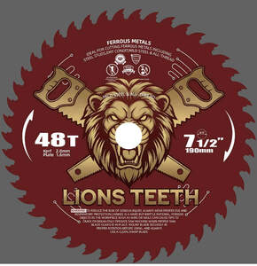

Trade Mark Journal No.2025/028 11 July 2025
UK00004225560 27 June 2025 (7)

- Class 7
- Blades for circular saws; Circular saw blades being parts of machines; Segmental saw blades for machines; Circular saws; Blades for circular saws [machines]; Power saw blades; Saw blades [parts of machines]; Saw blades for use with power tools; Stationary circular saws [machines]; Circular saws [for woodworking]; Saw fences for use on table saws; Saw machines; Electric wood saw machines; Hacksaw blades for machines; Knife blades for electric knives; Saw chains; Bandsaw blades for machines; Blade sharpening [stropping] machines; Chaff cutter blades; Blades (Chaff cutter -); Blades for power saws; Blade grinding machines; Portable saw mills; Sharpening machines for blades (Electric -); Chaff cutter blades [parts of machines]; Disc shaped rotating grinding tools [machines]; Snow plough blades; Dressers for blades [machine tool]; Blades for earth moving machines; Jig saws; Circular saws being portable electric power tools; Power-operated jig saws; Saber saws; Saw guide rails [parts of machines]; Blades for powered planes; Annular hole cutters [machine tools]; Pavement cutting power saws; Knife sharpening machines; Disc shaped rotating grinding tools [parts for machines]; Saw benches [parts of machines]; Saw benches being parts of machines; Jigsaw blades [parts for machines]; Keyhole saws [machines]; Grinding machines with spiral bevel gears; Disposable blades for use with machines; Blades [machine parts]; Plough blades for vehicles; Circle cutting tools for use with machines; Scroll saws; Circle cutters for use with machines; Blades for powered tools; Blade holders [parts of machines]; Knife grinding machines; Plow blades for vehicles; Machines for cutting grass; Grass cutting machines; Bow saws [machines]; Pelletizer blades being parts of machines; Stubble cutting machines; Saw-tooth setting machines [for lumbering or woodworking saws]; Electric chain saws; Rotary metal cutting tools [machines]; Motor hand saws; Stone cutting machines; Pruning saws [motorised]; Belt conveyors having a partially curved axis; Thread milling cutters [machine tool]; Chain saws; Flame cutting machines; Wire cut machines; Polycrystalline diamond cutters for ready cutting of workpieces [machines]; Cutter bar knives [parts for machines].
Ion Talambuta